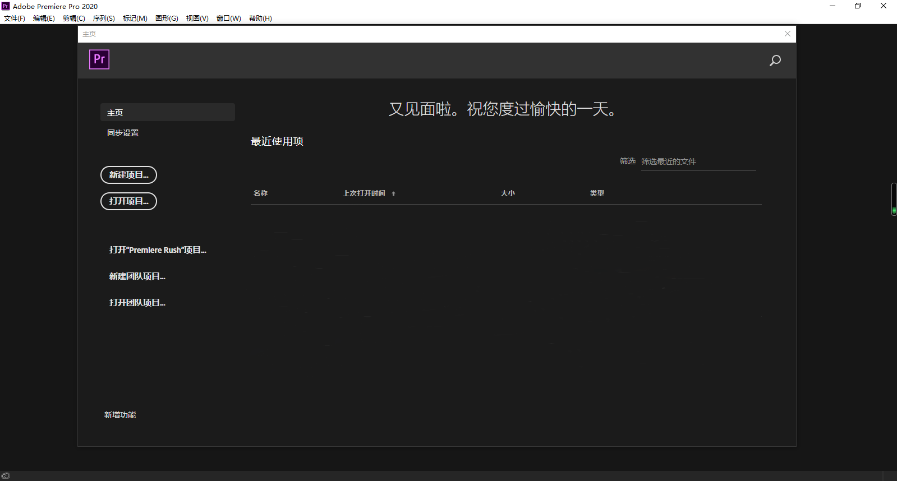

Premier简称"Pr"，是Adobe公司下面的一款视频剪辑软件,它是视频编辑爱好者和专业人士准备的必不可少的编辑工具,它可以提升您的创作能力和创作自由度,它是易学、高效、精确的视频剪辑软件。
那些手机上面的软件对他来说都是不在话下，因此，他吸引了一大批热爱剪辑的人们。
Premiere提供了采集、剪辑、调色、美化音频、字幕添加、输出、DVD刻录的一整套流程,并和其他Adobe软件高效集成。
使您足以完成在编辑、制作、工作流上遇到的所有挑战，满足您创建高质量作品的要求。
可是由于它做出来的视频质量好，做出来的视频效果多。因此，Adobe公司宣布下载需要付费，一大批人的梦想被摧毁了。况且说那些网上说多少钱多少钱一套Pr,那都是假的，因为我试过。
在此我为大家提供了安装包（强烈支持使用正版软件）
下载（提取码：24nz）